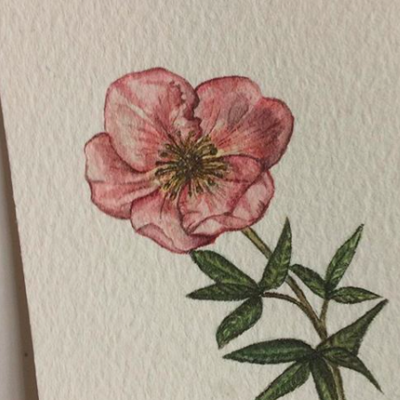
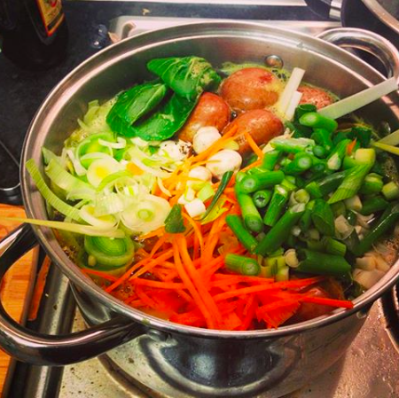

Hi, I'm Hattie!

As a Plant Biology graduate, I have a passion for all things botanical. I enjoy painting plants, and eating them too!
Botanical Art
I've been a hobbyist in botanical art for as long as I remember. It's a form of stress relief for me. I mainly use watercolours and am currently on a Lifelong learning course at Aberystwyth University alongside my MRes. Watercolour painting requires a bit of stamina and it definitely helps me in my studies. I'm hoping to make a website to be able to show a wide audience and may be even sell my work too- one day!

Chunky Herbivore
Not only do I study and draw plants in my spare time- I eat plants (and only plants) too! I'm vegan mainly because I really enjoy eating vegan food (sounds crazy, I know)! It's so easy to have this diet in 2018 too, with loads of supermarkets and restaurants having loads of options for us herbivores! I also enjoy cooking and baking- cinnamon rolls are by far my favourite thing to bake. Before my love of baking materialised, my claim to fame was that I used to get through a large jar of peanut butter a week- I make a mean satay sauce! One of my faourite dishes is this one-pot wonder: chanko nabe!

Favourite Book
I used to be an avid reader of fiction- my parents would get annoyed that I didn't do other things with my time- Wuthering Heights was definitely a favourite. Alas, I studied English Literature at A level, and my love of fiction died with my grades. So, I mainly now read cookery books. My favourite is by far THUG KITCHEN. A vegan-friendly, R-rated cookbook that has some inspiring recipe ideas- highly recommend!
Favourite Film
You'll find me watching anything by Wes Anderson. The scripts are quirky and cinematography is second-to-none. The Royal Tanenbaums, The Darjeeling Limited, Fantastic Mr. Fox are all firm favourites- as an artist, I appreicate the colours and symmetry in Anderson's scenes. If you're going to pick one, definitely go for The Grand Budapest Hotel- you won't be disappointed by Ralph Finnes!